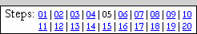
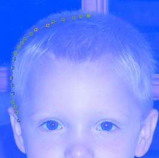
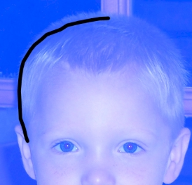
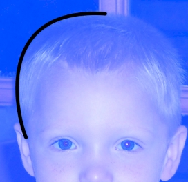
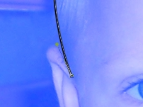
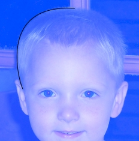
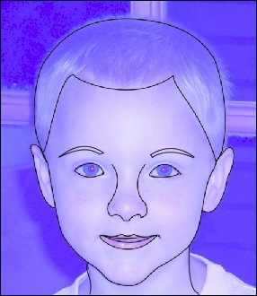
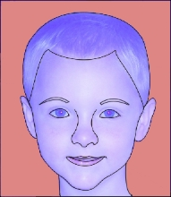
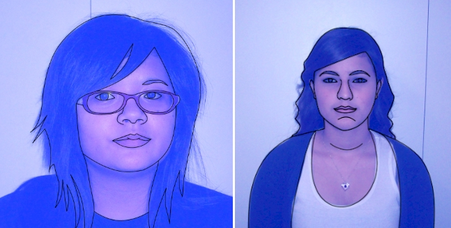

| PART I: YOUR FACE | |
| Step 05: Path Inking |  |
We can now begin to create a nice, black outline version of our picture. We will work first on the long, unbroken lines in the image. We could simply draw our face freehand (and we will do some of this in the next step), but Photoshop has a built-in system that will create smooth, perfect lines for us. This is accomplished using Path Inking. Path inking can seem pretty intimidating at first. It can seem like a horrible, technical, time-consuming, and complicated process. But, once you get a good sense of how to use the Pen tool, it really is easy to work with, comes in handy, and the lines it makes are pretty much flawless.
Before we get started, let's make sure we have the correct layer selected.
DRAW ONLY ON THE CARTOON LAYER - THIS IS VERY IMPORTANT!
If your Face layer is unlocked and you draw your cartoon lines on it then the lines you draw will merge with the blue image and will be impossible to separate,
AND YOU WILL HAVE TO START OVER.
When working with Photoshop, be sure that all changes you make are being placed on the correct layer. By keeping our cartoon and photograph layers separate we can turn the visibility of our photo on and off as needed to see our progress and compare the cartoon we are making with our original image.
The two tools we'll be using are the Pen tool (about halfway up the Tools panel) and the Direct Selection tool (just under the Type tool). We'll be using the Pen tool to draw points and the Direct Selection tool to modify them.
When we create Paths, we are drawing temporary lines that Photoshop remembers which will serve as a guide for Photoshop to drop ink over. The really cool thing is that we can create, delete, or move points on these lines before we ink them, so we are able to make the lines look exactly the way we want before we add in the color. Think of it as using a string to create a shape on the floor, then moving the string around any way we want to create any shape we want. Once we have the string in a position we like, we use a can of spray paint to paint over the string to create a line (except Photoshop does the painting for us!).
We first need to set our brush to the correct size.
A BRUSH SIZE OF 4 IS CRUCIAL FOR YOUR
CARTOON FACE TO COME OUT RIGHT.
MAKE SURE YOUR BRUSH IS SET TO 4.
Let's begin creating the outline of your face.
THIS IS VERY IMPORTANT - IF YOU DO NOT SELECT PATH ALL KINDS OF STRANGE THINGS WILL HAPPEN, SO FOLLOW THESE DIRECTIONS CAREFULLY!
Let's start creating our paths just above your ear. When using the Pen tool, clicking the left mouse button places an anchor point. If you drag the mouse a little bit while holding the mouse button down, you can set its starting direction. You need to make sure that you ALWAYS set a starting direction because if you don't the path will just be a straight line to the next point you make and the curves it makes will stink. So the starting direction line is how you get Photoshop to make nice, pretty curves. If you look at the image below you will see a box with lines coming out the top and bottom with small dots at the end of them - the box is the anchor point that I dropped and the lines are the direction lines (when you drag the mouse, the direction lines are drawn an equal distance on each side of the anchor point). Remember that if you put an anchor in the wrong place, you can hit the Delete key to get rid of it. If you do not have a line but instead have a strange shape that is filled in with This is happening because you did not read and follow direction
ELEVEN above.
|
When working with paths, we want to keep the lines simple and not too complicated. In the graphic above you can see that I am only using 3 points to create the curve and that I am only doing half of the top of his head. I could certainly do more of the head at once, but by using short, easy to work with lines I can make sure that I make an accurate outline.
A WORD OF WARNING AT THIS
POINT:
Do not drop too many points!
If you have too many points your line will
actually look more jagged than if you use few points and let Photoshop add in a
nice curved line.
If your points look like this...

then your line will look like this...

Notice that the above line is not smooth at all, especially when compared to the one
below...

which was created using only 3 points. Make sure your
lines are smooth!
The Pen Tool is a difficult concept for some users to master, so don't worry too much if you have a hard time getting it to work correctly. Keep practicing and it will work. Using a Path means you will have very clean, very neat lines.
Once all the anchors of the line you want to create are in place, you can go back and fine-tune them. Keep in mind that your Path should NOT attempt to outline or draw too much of the image, as this will likely result in problems. Keep your pathing to easy, smooth lines you can work with.
Let's fine-tune our points.
Before we stroke our path, let's make sure that we are drawing with black ink.
When you have a curve you are happy with - and black as your color - it's time to ink the line.
Photoshop should have just inked (dropped black ink on top of) the path you created and you should see something like this...

If your line is a color other than black or is too wide/thin, simply press Ctrl+Z on the keyboard to undo the inking and fix your issues using the above directions.
Once the line looks good we no longer need the path so we can get rid of it.
You should now have something like this...

We are now ready to path ink the rest of your head.
Keep in mind that while the Pen tool is good for the long, important lines, it should not be used for every line in the picture! It could be, but if your pictures have many small lines like this one, you would simply be driven insane. These small lines don't need the detail of the longer ones, so you would be better off drawing them freehand with the mouse (which we will do in the next step)
When you finish the above step, you will have something like this...

Keep something very important in mind at this point - your cartoon needs to extend to the bottom of the image. This will be very important to us when we create our Backing layer in Step 08...

We need to be able to select all of the pinkish area at once
Notice that in the picture I'm using for this tutorial that the lines of the neck go all the way to the bottom of the image so that the entire head is one contained unit. This will allow me to quickly and easily select everything around my head with one click so that we are only left with our cartoon noggin. If you have long hair that extends out the bottom of the photo you can ink that, if not you will have to ink and add color to your clothes. Take a look at the two outlines below...

In the left image, her hair was long enough that it extended out the bottom of the image and thus no additional work on her clothes needed to be done. In the right image however, she had to add paths to her jacket and blouse so that the cartoon extended all the way to the bottom of the image. It does not matter at this point how you accomplish this, just make sure that your paths extend all the way to the bottom of the picture.
At this point our cartoon is not perfect - we are missing some important parts around the eyes and ears, but these are short lines that will take a long time to get in if we use paths, so we will simply freehand ink them in the next step.
Save your Face file
01 | 02 | 03 | 04 | 05 | 06 | 07 | 08 | 09 | 10 | 11 | 12 | 13 | 14 | 15 | 16 | 17 | 18 | 19 | 20